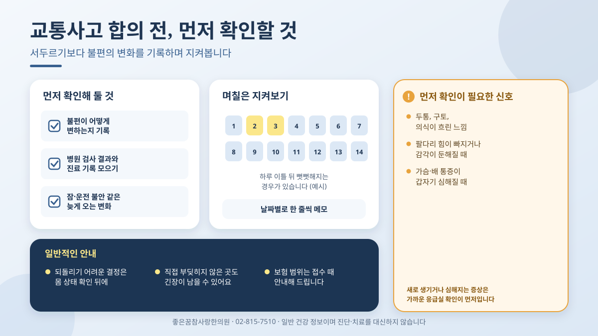

이종호 한의사 감수좋은꿈참사랑한의원 대표원장 (한의사 면허번호 19769)발행 2026-11-22 · 수정 2026-11-26
이 글의 차례
- 왜 이런 불편이 생길 수 있나요
- 먼저 이렇게 여쭙니다
- 미리 정리해 두면 좋은 것
- 상황별 예시
- 스스로 점검해 보세요
- 기록은 어떤 형식으로 남기면 좋을까요?
- 왜 사고 전 불편과 사고 뒤 불편을 나눠 적어야 할까요
- 몸 상태를 정리할 때 자주 빠뜨리는 것
- 결정을 앞두고 스스로 물어볼 것은 무엇일까요?
- 사고 뒤 처음 며칠은 어떻게 지내면 좋을까요?
- 진료 때 기록은 이렇게 활용합니다
- 가족이 함께 정리해 주면 좋은 경우
- 마음의 변화도 함께 적어 두세요
- 영수증과 서류는 어떻게 모아 둘까요?
- 일상에서 힘든 동작은 이렇게 구체적으로 적어 보세요
- 일이나 학업에 생긴 변화도 남겨 두세요
- 좋아지는 흐름은 어떻게 알아볼 수 있을까요?
- 한의원에서 함께 살필 수 있는 경우
- 이렇게 기록해 오시면 상담이 쉬워집니다
- 얼마나 지켜보고 언제 상담할까요
- 이런 증상은 먼저 확인이 필요합니다
- 관련 글
교통사고 직후에는 괜찮다고 느끼다가 며칠 뒤 목이나 허리가 아파지는 경우가 있습니다. 합의 시점이나 방법은 법률·보험의 영역이라 이 글에서 정해 드리지 않습니다. 다만 어떤 결정을 앞두고 있든, 그 전에 내 몸이 사고 뒤 어떻게 변해 왔는지를 날짜순으로 기록해 두면 지금 상태를 스스로 정리하고 의료진과 이야기하는 데 도움이 됩니다.
왜 이런 불편이 생길 수 있나요
- 사고 순간에는 긴장과 놀람 때문에 통증을 덜 느끼다가, 하루 이틀 뒤 목과 허리가 뻣뻣해지는 경우가 있습니다.
- 충격 방향에 따라 목, 어깨, 허리, 무릎처럼 직접 부딪히지 않은 곳에도 근육의 긴장이 남을 수 있습니다.
- 사고 뒤 잠이 얕아지거나 운전이 불안해지는 것처럼 마음의 변화가 늦게 드러나기도 합니다.
- 그래서 불편이 어떻게 변하는지 날짜와 함께 기록해 두는 것이 지금 상태를 정리하는 첫걸음입니다.
먼저 이렇게 여쭙니다
- 사고가 난 날과 처음 불편을 느낀 날은 언제인가요?
- 사고 전부터 불편했던 곳이 있었나요?
- 지금 일상에서 가장 힘든 동작은 무엇인가요?
- 사고 뒤 끼니와 잠은 평소처럼 챙기고 있나요?
- 지금도 남아 있는 불편은 무엇인가요?
- 병원 진단서나 검사 결과를 가지고 있나요?
- 치료를 얼마 동안 받았고 지금 어떤 상태인가요?
- 사고 뒤 잠이나 운전할 때의 마음에 달라진 점이 있나요?
미리 정리해 두면 좋은 것
- 사고 날짜, 경위, 처음 증상을 날짜순으로 적어 두기
- 진단서, 검사 결과, 진료 영수증을 한곳에 모아 두기
- 불편이 남은 부위와 일상에서 힘든 동작을 기록하기
- 보험 처리 방법과 필요한 서류는 보험사 담당자에게 확인하기
- 한의원 진료를 받을 때 무엇을 준비해 오면 되는지는 방문 전 전화(02-815-7510)로 확인해 주세요
- 사고 장소와 차 안의 모습을 사진으로 남겨 두었다면 그 사진도 한곳에 모아 두기
- 사고 뒤 처음 며칠의 몸 상태는 기억이 흐려지기 전에 먼저 적어 두기
상황별 예시
- 예를 들어 출근하던 직장인이 신호를 기다리다 뒤차에 부딪힌 경우라면, 당일에는 멀쩡하다가 이틀째 아침 고개를 돌리기 어려운 일이 생길 수 있습니다. 처음 뻐근함을 느낀 날과 시각, 고개를 어느 쪽으로 돌릴 때 걸리는지를 그날 바로 적어 두면 좋습니다.
- 예를 들어 아이를 키우는 부모가 뒷좌석의 아이를 챙기느라 자기 몸은 뒤로 미뤄 둔 경우라면, 아이를 안아 올릴 때 허리가 어떤지, 밤에 몇 번 깨는지처럼 생활 속 장면으로 기록해 두면 진료실에서 이야기가 훨씬 구체적이 됩니다.
- 예를 들어 어르신이 버스나 택시의 급정거로 몸이 쏠린 경우라면, 원래 있던 무릎이나 허리 불편과 사고 뒤 새로 생긴 불편을 나누어 적어 두는 것이 중요합니다. 가족이 함께 기억을 정리해 드리면 더 좋습니다.
스스로 점검해 보세요
- 사고 날짜와 처음 불편을 느낀 날을 적어 두었나요?
- 지금 남아 있는 불편을 부위별로 말할 수 있나요?
- 진단서·검사 결과·영수증을 한곳에 모아 두었나요?
- 고개 돌리기, 오래 앉기, 계단처럼 힘든 동작을 구체적으로 적어 두었나요?
- 사고 전부터 있던 불편과 사고 뒤 새로 생긴 불편을 나누어 적었나요?
- 사고 뒤 잠이 얕아지거나 운전이 불안해진 변화가 있나요?
- 하루 한 줄이라도 기록을 이어서 적고 있나요?
- 영수증과 서류를 사진으로도 남겨 두었나요?
- 보험 처리와 필요한 서류를 보험사 담당자에게 확인해 두었나요?
기록은 어떤 형식으로 남기면 좋을까요?
노트 한 권이나 휴대전화 메모 하나를 사고 기록 전용으로 정해 두세요. 여기저기 흩어 적으면 나중에 날짜순으로 맞추기가 어렵습니다.
하루 한 줄이면 충분합니다. 날짜, 가장 불편한 부위와 0~10점 통증 점수, 오늘 힘들었던 동작 하나, 지난밤 잠의 상태를 적습니다. 좋아진 날도 빠뜨리지 않고 적어야 흐름이 정확하게 보입니다.
멍이나 부기가 눈에 보인다면 날짜가 남도록 사진을 찍어 두세요. 며칠 사이 색과 크기가 변하는 모습이 함께 남습니다. 진료나 검사를 받은 날에는 그날 들은 설명을 짧게 덧붙입니다.
왜 사고 전 불편과 사고 뒤 불편을 나눠 적어야 할까요
원래 허리가 자주 뻐근했던 분이 사고를 겪으면 지금의 통증이 예전부터 있던 것인지 새로 생긴 것인지 본인도 헷갈리기 쉽습니다. 시간이 지나면 기억은 더 흐려집니다.
사고 전 불편은 "평소 오래 앉으면 허리가 묵직했다"처럼 언제, 어떤 상황에서 있었는지를 적고, 사고 뒤 불편은 "사고 이틀째부터 고개를 왼쪽으로 돌리면 당긴다"처럼 시작된 날과 모양을 적어 둡니다.
이렇게 나눠 두면 진료실에서도 지금 살펴야 할 곳을 더 정확히 짚을 수 있고, 회복의 흐름을 이야기할 때도 기준이 분명해집니다.
몸 상태를 정리할 때 자주 빠뜨리는 것
- 운전대를 꽉 쥐고 있던 손목이나 팔꿈치, 안전벨트가 지나간 가슴과 어깨처럼 직접 부딪히지 않은 곳의 불편
- 사고 뒤 이를 꽉 무는 습관이 생겨 턱이 뻐근하거나 입을 벌릴 때 소리가 나는 변화
- 잠들기까지 걸리는 시간, 밤에 깨는 횟수, 꿈이 잦아진 것 같은 잠의 변화
- 입맛이 떨어지거나 속이 더부룩해진 소화의 변화
- 일이나 집안일, 운동을 줄이거나 쉬어야 했던 날
- 차를 타거나 사고 장소를 지날 때 몸이 굳는 느낌
- 두통이나 어지럼처럼 처음에는 사고와 상관없다고 여겼던 불편
결정을 앞두고 스스로 물어볼 것은 무엇일까요?
- 사고 직후와 비교해 지금 가장 달라진 점은 무엇인가요?
- 사고 전처럼 하기 어려운 일이 아직 남아 있나요?
- 최근 일주일 통증 점수는 어떤 흐름인가요?
- 진료를 받으며 들은 설명 가운데 아직 궁금한 것이 있나요?
이 질문들은 합의 여부를 정해 드리려는 것이 아니라, 결정을 앞두고 내 몸이 지금 어디쯤 와 있는지 스스로 정리해 보시라는 뜻입니다. 결정과 절차는 보험사 담당자나 관련 전문가와 상의해 주세요.
사고 뒤 처음 며칠은 어떻게 지내면 좋을까요?
사고 뒤 며칠은 괜찮다고 느껴도 몸이 놀라 있는 시기입니다. 무거운 짐을 들거나 오래 운전하는 일, 강한 운동은 잠시 미루고 평소보다 일찍 쉬는 쪽으로 하루를 꾸려 보세요.
아픈 곳을 세게 주무르거나 혼자 무리하게 스트레칭하면 오히려 뻐근함이 커지는 경우가 있습니다. 불편한 곳이 있으면 먼저 진료를 받아 지금 상태를 확인하고, 집에서 할 동작은 그 뒤에 정하는 것이 좋습니다.
사고 처리로 통화와 서류 일이 몰리면 끼니와 잠을 놓치기 쉽습니다. 처리할 일은 하루 중 시간을 정해 몰아서 하고, 나머지 시간에는 몸을 쉬게 해 주세요.
진료 때 기록은 이렇게 활용합니다
적어 두신 기록을 진료 때 보여 주시면, 어느 날부터 어떤 동작이 편해졌고 무엇이 그대로인지 함께 짚어 볼 수 있습니다. 기억에만 기대어 이야기할 때보다 지금 몸이 어디쯤 와 있는지가 훨씬 또렷해집니다.
진료실에서 들은 설명이나 집에서 해 볼 것도 같은 노트에 이어서 적어 두세요. 다음에 오셨을 때 지난번 이야기와 그사이 달라진 점을 나란히 놓고 이어서 살필 수 있습니다.
가족이 함께 정리해 주면 좋은 경우
어르신은 불편을 참고 넘기거나 날짜를 헷갈리시는 일이 많아, 가족이 하루 한 번 안부를 물으며 대신 적어 드리면 도움이 됩니다. 아이가 함께 사고를 겪었다면 아픈 곳을 말로 잘 설명하지 못할 수 있어, 잠투정이나 입맛, 노는 모습이 달라졌는지를 보호자가 살펴 적어 주세요.
본인이 정신없이 일을 처리하느라 몸을 돌보지 못하는 경우에도 가까운 사람이 기록 노트를 챙겨 주면 빠뜨리는 날이 줄어듭니다.
마음의 변화도 함께 적어 두세요
사고 뒤에는 몸의 통증만큼 마음의 변화도 생길 수 있습니다. 차 소리에 깜짝 놀라거나, 운전대를 잡기 싫어지거나, 괜히 짜증이 늘었다면 그것도 날짜와 함께 한 줄 적어 두세요.
이런 변화는 시간이 지나며 가라앉기도 하지만, 기록이 없으면 언제부터 어땠는지 나중에 떠올리기 어렵습니다. 진료 때 몸 이야기와 함께 말씀해 주시면 잠과 긴장 상태까지 이어서 살필 수 있습니다.
영수증과 서류는 어떻게 모아 둘까요?
진단서, 검사 결과지, 진료비 영수증, 약 봉투처럼 종이로 받은 것은 투명 파일 하나에 날짜순으로 넣어 둡니다. 받는 즉시 휴대전화로 사진을 찍어 사고 기록 폴더에 함께 저장해 두면 잃어버려도 다시 찾기 쉽습니다.
어느 기관에서 언제 어떤 진료를 받았는지 한 장짜리 목록으로 정리해 두면, 새로 방문하는 곳에서 지금까지의 경과를 설명할 때도 훨씬 수월합니다. 서류가 무엇이 필요한지는 보험사 담당자에게 확인해 주세요.
일상에서 힘든 동작은 이렇게 구체적으로 적어 보세요
"허리가 아프다"보다 "아침에 양말을 신으려고 허리를 숙일 때 아프다", "목이 불편하다"보다 "운전하며 오른쪽 사이드미러를 볼 때 당긴다"처럼 장면으로 적으면 훨씬 쓸모 있는 기록이 됩니다.
같은 동작을 날마다 다시 해 보며 점수를 매겨 두면 좋아지는 흐름이 숫자로 보입니다. 예를 들어 계단 한 층을 오를 때의 불편을 날마다 0~10점으로 적어 두는 식입니다.
잠자리에서 돌아누울 때, 아이를 안아 올릴 때, 장바구니를 들 때처럼 하루에 여러 번 하는 동작 가운데 두세 가지를 골라 꾸준히 적어 보세요. 진료 때도 같은 동작으로 다시 확인해 볼 수 있습니다.
일이나 학업에 생긴 변화도 남겨 두세요
사고 뒤 출근이나 등교를 쉬었거나, 근무 시간을 줄였거나, 오래 앉지 못해 공부 계획을 바꿨다면 그 날짜와 내용을 함께 적어 두세요. 몸의 불편이 생활에 어떤 영향을 주었는지 한눈에 볼 수 있습니다.
예를 들어 컴퓨터 앞에 30분 이상 앉아 있기 어려워 업무 중 자주 일어나야 했다면, 그런 날이 얼마나 이어졌는지 적어 두는 것만으로도 지금의 상태를 설명하기가 쉬워집니다.
이런 기록은 진료실에서 회복의 흐름을 이야기할 때도 기준이 되어 줍니다.
좋아지는 흐름은 어떻게 알아볼 수 있을까요?
몸이 회복될 때는 통증이 한순간에 사라지기보다 아픈 날과 덜 아픈 날이 섞이며 조금씩 나아가는 경우가 많습니다. 하루하루의 점수보다 일주일 평균이 어떻게 움직이는지 보면 흐름이 더 잘 보입니다.
예를 들어 지난주에는 고개를 돌릴 때 매번 당겼는데 이번 주에는 아침에만 당긴다면, 통증이 남아 있더라도 흐름은 달라지고 있는 것입니다. 이런 변화를 진료 때 함께 이야기하면 다음에 무엇을 할지 정하기가 쉬워집니다.
한의원에서 함께 살필 수 있는 경우
- 사고 뒤 여러 가지 불편이 있어 무엇을 기록해야 할지 헷갈리는 경우 증상을 함께 정리합니다.
- 치료 방향을 정하기 전 몸의 상태를 확인하고 싶은 경우 진료에서 함께 살핍니다.
- 사고 뒤 일상에서 불편한 동작이 남아 있는 경우 어떤 동작이 힘든지 함께 살핍니다.
좋은꿈참사랑한의원에서는 첫 방문 때 사고 경위와 불편이 시작된 때를 먼저 충분히 듣습니다. 이어서 모든 분께 맥을 짚고, 필요하다고 판단될 때 혀와 배를 함께 살핍니다. 아픈 곳은 움직임과 누르는 반응, 저림·감각·근력을 확인하고, 필요하면 초음파로 근육과 힘줄을 봅니다.
그다음 상태에 맞춰 침·약침·추나 등 방향을 정하고 그 이유를 설명해 드립니다. 의과 검사가 먼저 필요하면 그 순서를 안내하고, 귀가 전에는 집에서 지켜볼 점을 알려 드립니다. 다음에 오시면 지난 이야기를 이어서 여쭙고 달라진 점을 함께 기록합니다.
이렇게 기록해 오시면 상담이 쉬워집니다
- 사고 날짜와 시각, 차 안에서 앉아 있던 자리와 충격 방향
- 처음 불편을 느낀 날과 부위, 이후 달라진 점
- 받은 진료와 검사, 진단서·영수증 목록
- 지금도 힘든 동작(고개 돌리기, 오래 앉기, 계단 등)
- 하루 한 번 불편 정도를 0~10점으로 적고 잠의 변화를 함께 남긴 메모
- 사고 전에는 문제없던 일 가운데 지금 힘든 일(아이 안기, 장보기, 운동, 집안일 등)
- 사고 뒤 달라진 마음의 변화(차 소리에 놀람, 운전이 꺼려짐 등)와 그 날짜
- 일이나 학업을 쉬거나 줄인 날
얼마나 지켜보고 언제 상담할까요
- 사고 뒤 처음 며칠은 증상이 새로 나타나거나 달라질 수 있어, 괜찮다고 느껴도 날마다 짧게 기록해 둡니다.
- 하루 이틀 뒤 뻐근함이 시작되었다면 미루지 말고 진료를 받아 지금 상태를 확인해 두시길 권합니다.
- 1~2주가 지나도 불편이 줄지 않거나 아픈 곳이 오히려 넓어진다면, 그동안의 기록을 가지고 상담을 이어 가세요.
- 잠이 얕거나 운전이 두려운 마음이 2주 넘게 이어지면 몸과 함께 마음의 긴장도 상담에서 말씀해 주세요.
- 아래 신호가 있으면 기록을 기다리지 말고 바로 가까운 응급실로 가세요.
이런 증상은 먼저 확인이 필요합니다
- 의식이 흐려지거나 깨워도 반응이 둔한 경우
- 두통이 점점 심해지거나 구토가 반복되는 경우
이런 신호가 있으면 한의원보다 가까운 병원이나 응급실을 먼저 찾으세요.
관련 글

여쭙는 것
- 사고가 난 날과 처음 불편을 느낀 날은 언제인가요?
- 사고 전부터 불편했던 곳이 있었나요?
- 지금 일상에서 가장 힘든 동작은 무엇인가요?
한의원에서 함께 살필 것
- 사고 뒤 여러 가지 불편이 있어 무엇을 기록해야 할지 헷갈리는 경우 증상을 함께 정…
- 치료 방향을 정하기 전 몸의 상태를 확인하고 싶은 경우 진료에서 함께 살핍니다.
- 사고 뒤 일상에서 불편한 동작이 남아 있는 경우 어떤 동작이 힘든지 함께 살핍니다.
먼저 확인이 필요한 신호
- 의식이 흐려지거나 깨워도 반응이 둔한 경우
- 두통이 점점 심해지거나 구토가 반복되는 경우
한눈에 보는 표
| 구분 | 핵심 |
|---|---|
| 여쭙는 것 | 사고가 난 날과 처음 불편을 느낀 날은 언제인가요? 사고 전부터 불편했던 곳이 있었나요? |
| 한의원에서 함께 살필 것 | 사고 뒤 여러 가지 불편이 있어 무엇을 기록해야 할지 헷갈리는 경우 증상을 함께 정리합니다. 치료 방향을 정하기 전 몸의 상태를 확인하고 싶은 경우 진료에서 함께 살핍니다. |
| 먼저 확인이 필요한 신호 | 의식이 흐려지거나 깨워도 반응이 둔한 경우 두통이 점점 심해지거나 구토가 반복되는 경우 |
자주 묻는 질문
사고 직후 괜찮으면 병원에 안 가도 되나요?
증상이 늦게 나타나기도 해서 점검을 한 번 받아 보도록 안내하는 경우가 많습니다.
합의는 언제 하나요?
법적·보험 문제는 이 글에서 다룰 수 없어 보험사 담당자나 전문가에게 확인하도록 안내합니다.
한의원에서는 무엇을 하나요?
불편한 부위와 경과를 묻고 필요한 진찰을 하며, 의과 검사가 필요하면 먼저 권합니다.
한의원 진료 기록도 받을 수 있나요?
진료 기록이나 확인서가 필요하면 접수할 때 말씀해 주세요. 발급할 수 있는 서류와 절차는 방문 전 전화로 확인해 주세요.
사고 전부터 아팠던 곳도 같이 말해야 하나요?
네. 사고 전부터 있던 불편과 사고 뒤 새로 생긴 불편을 나누어 말씀해 주시면 지금 상태를 더 정확하게 살필 수 있고, 기록도 구분해서 남길 수 있습니다.
기록은 언제까지 해 두면 되나요?
정해진 기간은 없지만 불편이 남아 있는 동안은 짧게라도 날짜와 함께 적어 두시길 권합니다. 진료 때 가져오시면 지난번과 비교하며 이어서 살핍니다.
기록을 빠뜨린 날이 있으면 어떻게 하나요?
괜찮습니다. 기억나는 만큼 적고 '나중에 적음'이라고 표시해 두세요. 빈 날이 있더라도 이어서 적는 것이 흐름을 보는 데 더 중요합니다.
좋은꿈참사랑한의원은 재진 때 지난번 이야기부터 이어서 여쭙니다. 진료시간과 예약은 오시는 길에서 확인하세요.
어디서 상담받을 수 있나요?
좋은꿈참사랑한의원은 서울 동작구 만양로2길 2 신성빌딩 3층·5층(서울 동작구 상도동, 7호선 상도역 3번 출구 근처)에 있습니다. 한의사 3명(이종호 대표원장, 조영기 수석진료원장, 정원영 진료원장)이 진료합니다. 진료시간은 평일 09:30~20:00(점심 13:00~14:00), 토·일·공휴일 09:30~15:00이며, 방문 전 전화로 확인을 권합니다. 예약은 네이버 예약, 카카오톡 상담, 전화 02-815-7510로 받습니다.
이 글은 일반적인 건강 정보이며 개인의 진단이나 치료를 대신하지 않습니다. 증상이 있거나 복용 중인 약이 있다면 진료를 통해 확인하세요. 치료 효과는 개인마다 다를 수 있습니다.
작성 기준: 일반적으로 알려져 있는 건강 정보를 참고해 정리했습니다(대표원장 감수). 증상 기록은 1~2주 동안 하루 1회, 비슷한 시간에 적어 오시면 지난 상태와 비교하기 쉽습니다.